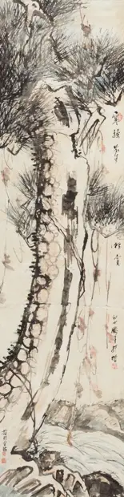

PINE
访问原网页 ↗Visit original website ↗

S028 · MutualArt / China Guardian记录 · 2014-09-21拍卖
64.57×16.14英寸；平台列滕白也作品并提供图像。Auction platform supplies an image attributed to Teng and dimensions of 64.57 × 16.14 inches.
馆藏图像与原文Archived images and documents
- 松 PINE 拍卖图松 PINE 拍卖图 I017

来源页摘录Source-page excerpt
Teng Baiye | PINE | MutualArt
View PINE By Baiye Teng; 164×41 cm; . Access more artwork lots and estimated & realized auction prices on MutualArt.
原始网址Original URL
https://www.mutualart.com/Artwork/PINE/AB8795CBAC091493